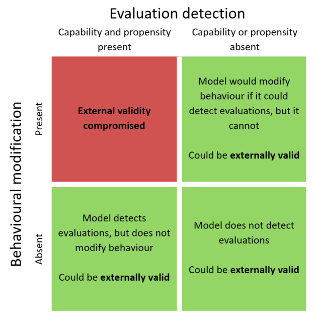
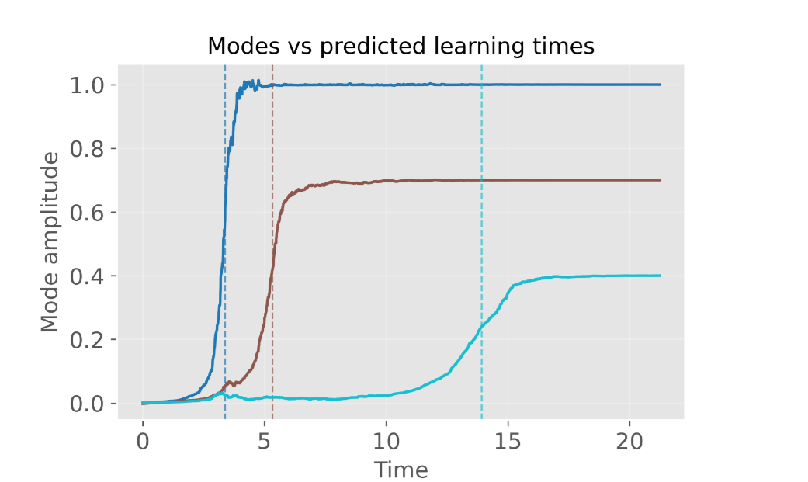
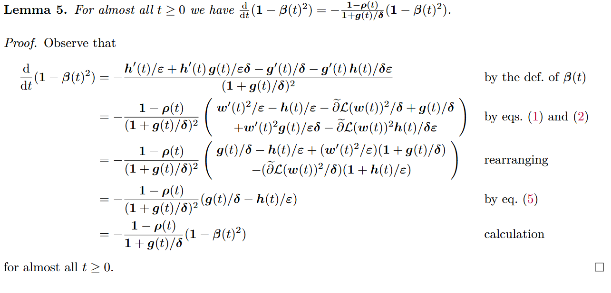
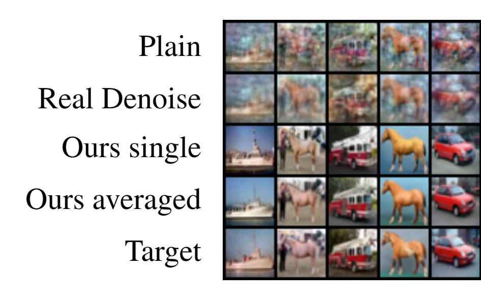
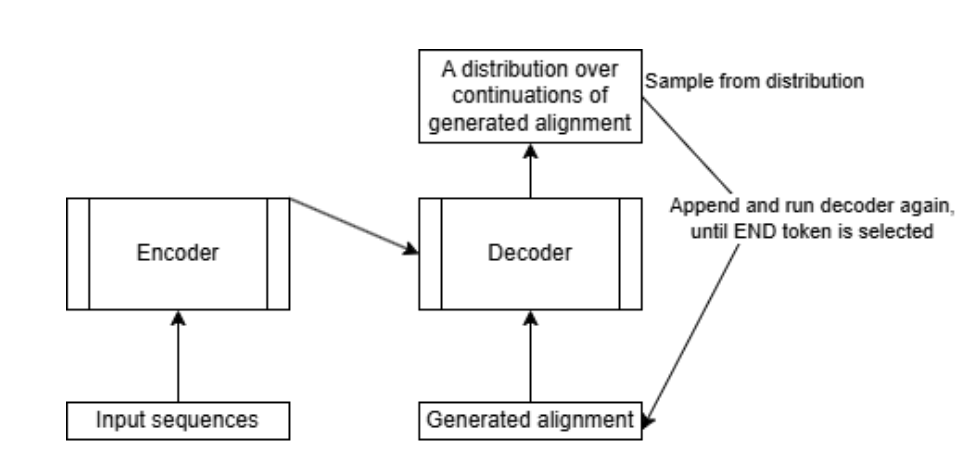

Hi, I'm Avi! I'm a DPhil student in the AIMS CDT, with funding to work on technical AI governance (< Old French governance < Latin gubernāre ‘to steer a ship’ < Greek kubernân; the same root gave us cybernetics) from the Oxford Martin AI Governance Initiative. I'm currently working on RL dynamics, as part of Apollo Research's MATS stream. My interests include AI safety, evaluation (< French évaluer ‘to work out the value of’, from é- ‘out’ + Old French value < Latin valēre ‘to be strong, be worth’) awareness, chain-of-thought monitoring, auditing and pacing of AI development, and understanding why (< Old English hwȳ, the instrumental case of hwæt ‘what’, so literally ‘by what’; < Proto-Germanic *hwī < the Proto-Indo-European question stem *kʷi-/*kʷo-, which also gave Latin quis ‘who’ and quid ‘what’) deep learning works.
My motivation for doing research in these areas is to contribute to bringing about outcomes where AI benefits all.
In the past, I studied maths and computer science at the University of Warwick, helped run Warwick's effective altruism society, organised AI safety reading groups, and climbed a mountain or two.
I occasionally write about topics in AI and linguistics that interest me.
You can contact me by email (FIRST_NAME.LAST_NAME@outlook.com).: (You can find my CV here.)
Research
-

Evaluation Awareness as a Threat to External Validity in AI Evaluations
. ICML Workshop on Technical AI Governance Research (TAIGR), 2026.AI evaluations are a component of AI governance frameworks, used to assess risks and inform policy. However, frontier models have been observed to detect when they are being evaluated and behave differently as a result, a phenomenon referred to as evaluation awareness. AI evaluations are a component of AI governance frameworks, used to assess risks and inform policy. However, frontier models have been observed to detect when they are being evaluated and behave differently as a result, a phenomenon referred to as evaluation awareness. This may cause evaluations to misrepresent real-world model behaviour. We survey the evidence for evaluation awareness, assess current mitigation strategies, and describe policy implications. Mitigations include making evaluation environments similar to deployment, limiting exposure to information about evaluation in training, and suppressing awareness. We argue that without mitigation, evaluation awareness compromises the validity of conclusions drawn from evaluations, and that policy can play a role in incentivising and enabling mitigation. -

Stochastic Gradient Descent in the Saddle-to-Saddle Regime of Deep Linear Networks
Guillaume Corlouer, , Alexander Strang, Alexander Gietelink Oldenziel. arXiv preprint, 2026.Deep linear networks (DLNs) are used as an analytically tractable model of the training dynamics of deep neural networks. While gradient descent in DLNs is known to exhibit saddle-to-saddle dynamics, the impact of stochastic gradient descent (SGD) noise on this regime remains poorly understood. Deep linear networks (DLNs) are used as an analytically tractable model of the training dynamics of deep neural networks. While gradient descent in DLNs is known to exhibit saddle-to-saddle dynamics, the impact of stochastic gradient descent (SGD) noise on this regime remains poorly understood. We investigate the dynamics of SGD during training of DLNs in the saddle-to-saddle regime. We model the training dynamics as stochastic Langevin dynamics with anisotropic, state-dependent noise. Under the assumption of aligned and balanced weights, we derive an exact decomposition of the dynamics into a system of one-dimensional per-mode stochastic differential equations. This establishes that the maximal diffusion along a mode precedes the corresponding feature being completely learned. We also derive the stationary distribution of SGD for each mode: in the absence of label noise, its marginal distribution along specific features coincides with the stationary distribution of gradient flow, while in the presence of label noise it approximates a Boltzmann distribution. Finally, we confirm experimentally that the theoretical results hold qualitatively even without aligned or balanced weights. These results establish that SGD noise encodes information about the progression of feature learning but does not fundamentally alter the saddle-to-saddle dynamics. -

Implicit Regularization of AdaDelta
Matthias Englert, Ranko Lazic, (equal contribution). Transactions on Machine Learning Research, 2024.We consider the AdaDelta adaptive optimization algorithm on locally Lipschitz, positively homogeneous, and o-minimally definable neural networks, with either the exponential or the logistic loss. We consider the AdaDelta adaptive optimization algorithm on locally Lipschitz, positively homogeneous, and o-minimally definable neural networks, with either the exponential or the logistic loss. We prove that, after achieving perfect training accuracy, the resulting adaptive gradient flows converge in direction to a Karush-Kuhn-Tucker point of the margin maximization problem, i.e. perform the same implicit regularization as the plain gradient flows. We also prove that the loss decreases to zero and the Euclidean norm of the parameters increases to infinity at the same rates as for the plain gradient flows. Moreover, we consider generalizations of AdaDelta where the exponential decay coefficients may vary with time and the numerical stability terms may be different across the parameters, and we obtain the same results provided the former do not approach 1 too quickly and the latter have isotropic quotients. Finally, we corroborate our theoretical results by numerical experiments on convolutional networks with MNIST and CIFAR-10 datasets. -

Image Restoration for Training Data Reconstructed from Trained Neural Networks
Matthias Englert, Ranko Lazic, . Withdrawn conference submission.We investigate techniques to improve the quality of training images reconstructed from model parameters, addressing privacy concerns in deep learning. Haim et al. [NeurIPS 2022] propose a method to reconstruct training data from trained neural networks with impressive results. While their reconstructed images resemble the original training images, most of them also contain a considerable amount of noise and artifacts. This is especially true, when the network was trained on more than just a few dozen images. To address this, we view the problem as a specific image restoration task. Since the noise and artifacts are different from other types of noise (Gaussian noise, compression artifacts, blurring, or impulse noise from digital cameras), we create a new dataset specifically for the restoration of images produced by the reconstruction process proposed by Haim et al. We use this dataset consisting of about 60 million noisy reconstructions of CIFAR-10 images to train a diffusion model on the restoration task. Using this method, we obtain reconstructions that are significantly closer to the original training images measured in terms of SSIM and HaarPSI scores. -

Evaluating and Interpreting Transformers for Sequence Alignment (MSc dissertation)
. 2025.This dissertation explores how transformer models perform sequence alignment tasks, with a focus on understanding their internal representations and decision-making processes. This dissertation evaluates and interprets an encoder-decoder transformer model for pairwise DNA sequence alignment, using synthetic data generated from a pair Hidden Markov Model (pair HMM) as ground truth to better understand the black-box nature of deep learning approaches to alignment. We assess the transformer model’s ability to replicate optimal alignments and probability distributions defined by the pair-HMM, employing constrained beam search and comparing output distributions. Mechanistic interpretability techniques, including linear probing and LogitLens, are used to analyse internal computations including inference of evolutionary parameters. Results indicate the transformer effectively approximates pair-HMM likelihoods and distributions on synthetic data, with linear probes confirming its capacity to implicitly learn evolutionary parameters almost as accurately as is theoretically possible. This interpretability analysis offers insight into the model’s computational mechanism, enhancing confidence in the models probability distribution over alignments but casting doubt on the efficacy of beam search.
Projects
- Using AI to detect emotions from images of eyes. I evaluated CLIP embeddings and multi-modal language models for this task
- Agent-based simulation of congested systems such as transport, originally developed in 2023 as part of the University of Warwick Undergraduate Research Support Scheme and then vectorised with PyTorch
- Simulator of the enigma machine, using Python to implement the behaviour of the military 3-wheel enigma machine.
Other things
- I love learning languages, especially ones that are related and let you see how they developed from a common ancestor. English is still the only language I'd say I speak. For an introduction to historical linguistics, I'd recommend this article.
- My Erdős number is 4.